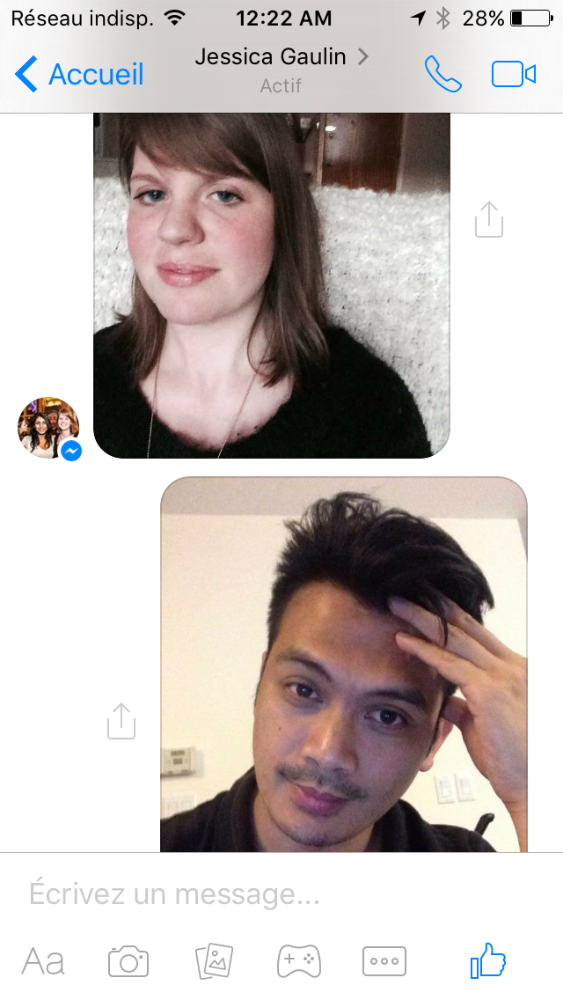
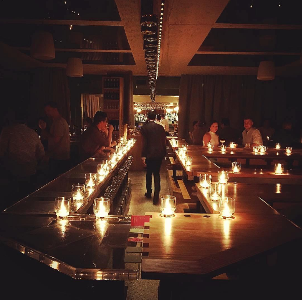
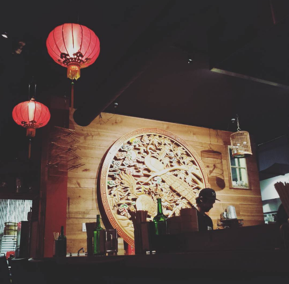
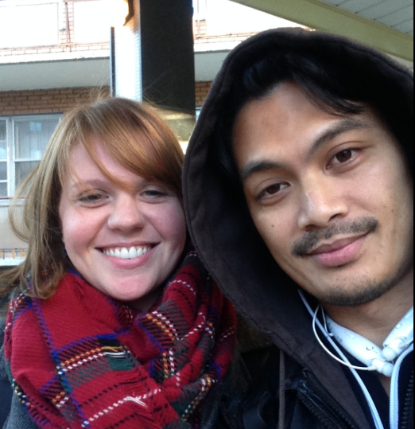
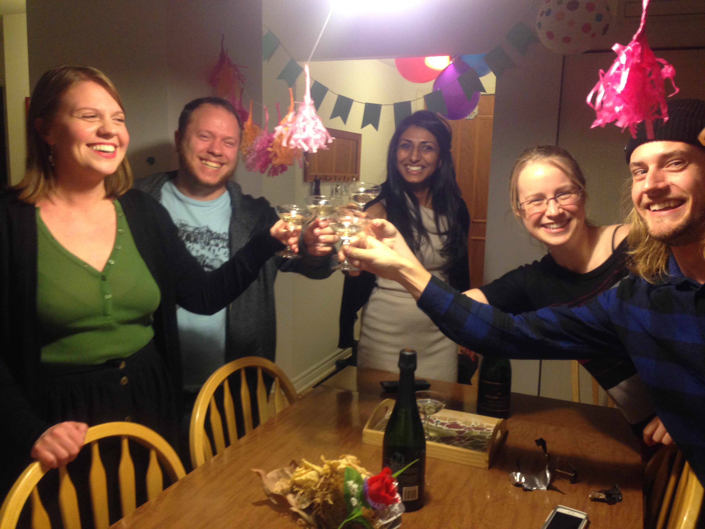
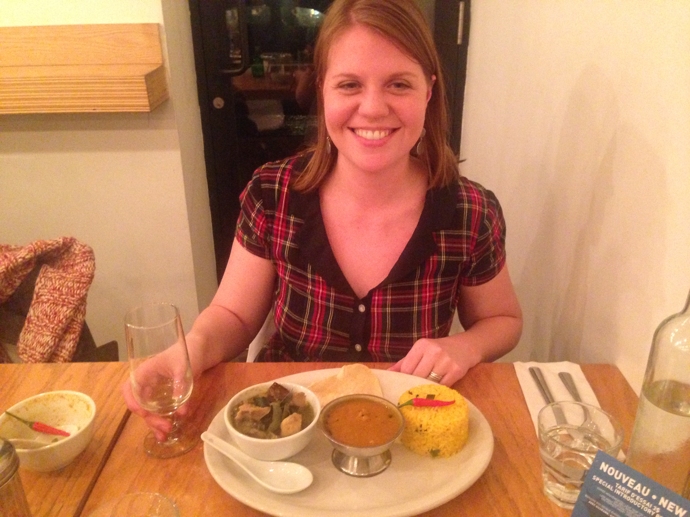

-
A history of us
chapter 1 - Hello Facebook
July 6, 2015I add Jessie to facebook. Jessie: "Thanks for adding me!", Jerry: "hello! No worries, I haven't been very active on fb so needed to catch up. Thus, it began from a possible bot from okcupid to real deal person on fb. lol.
The first few conversations were spent while I was in toronto visiting my dad, and Jessie's was finishing off at Edelman, about to start her new job at Invivo. The "vetting" process began..(what we are looking for, what we did for a living, what were our thoughts on this and that) during those fb messages.
A few days later, we had our first skype conversation, and we took a picture. A lot of laughing was had during the conversation, mostly by Jessie. At one point the skype video froze, in which a good 5-10 minutes of the conversation, she just had just a frozen picture of Jerry while he made funny voices.
 -
First Date
July 27, 2015First date with Jessie. I was back in Montreal. We went to big in japan bar. Jessie was wearing a nice dress. We talked a little about their childhood (Jessie use to put on a lot of plays as a kid, and studied theatre). Little did I know but Jessie was starving, and after I was taking my sweet time drinking my second beer, she mentioned going to eat somewhere nearby...like now..lol. We had some eats at patti pattata. I walked her to the park where her bus was nearby. We sat for a bit, and chatted. Before Jessie left for her bus, we kissed. I was super smooth. Not.
 -
Second Date with Jessie
August 04, 2015After texting each other, saying how much of a nice time we had, we went on another date a week later. At jessie's suggestion was saw a documentary at cinema du parc, Cars vs. Bikes. After the movie, we walked back to my apartment, where his roomate was having a celebratory party for one of her colleagues. Lots of people there, it was a pleasant evening all around.
-
Satay Brothers
9th October, 2015At this point, I had met Jordan and Dominique, and also Jessie's parents. (Unfortunately the exact dates were not certain). I remember hearing good things about this place and so we went to eat here, the second time I had spent time with Jordan and Dominique with Jessie. The first time we went to a bar to watch the montreal canadiens (not jessie's suggestion.lol). The nice thing is Jordan and Dominique speak to me often in english, which helps my brain.
 -
First Selfie
17th October, 2015First selfie outside of Jessie's apartment. I don't take as many pictures as I used to. But I don't mind taking selfies once in a blue moon. This is our first.
 -
First Birthday with Jessie
24th November, 2015Shalaka organized a suprise birthday party at her apartment. A bunch of her friends she hadn't seen in a while. She walked in quite surprised, but earlier she saw in shalaka's window people setting up when she walked out of the metro. LOL. It was a pleasant evening, I hadn't met PA who was there, and I heard all their old gang's old stories fo their times together. We also say the L word to each other the next morning.
 -
Birthday Dinner with Jessie at pop up resto
27th October, 2015Dinner at chef Nantha's popup resto. It was at fabergé, which has great breakfast poutine. (But the dinner was excellent!)
 -
Christmas Sweater
4th December, 2015Jessie gives Jerry a drake christmas sweater.
Jessie gives Jerry a drake christmas sweater.
Jessie gives Jerry a drake christmas sweater.
Jessie gives Jerry a drake christmas sweater.
Jessie gives Jerry a drake christmas sweater.
Jessie gives Jerry a drake christmas sweater.
Jessie gives Jerry a drake christmas sweater.
I proceed to dance a lot.
-
Strom Spa
February 15, 2016Strom Spa with Jessie. Courtesy of Jessie's parents giving us a nice christmas gift. It was one of the relaxing evenings ever. We did the hot baths, then scandanavian cold baths (well, me), and we also took a massage together. A very pleasant experience and am glad we shared it together. At this point, Jessie knows I'm a bit of a grumpy guss in person on the daily, despite my happy go lucky vibes in public. And She's been super understanding about that. There is something about having a hot bath then going into a cold bath that feels super relaxing on the body after. It's akin to meditation almost, you feel very peaceful and centered. (without the hard work lol)
-
First birthday with Jerry
March 16, 2016I was being very grumpy grump about wanting to do anything on my birthday, (i feel part of it was i hadn't really kept in touch with anyone the last few months..) but I was glad to do something small this year with just Jessie and me. Spent the day just the two of us in old port, then went to juniors filipino resto. I'd never really gone to any filipino restaurants in Montreal, but this one, in St. Henri was quite good, they added their own extra touches to traditional filipino dishes.
-
Sugar Shack
April 24, 2016Went to a "fancy" sugar shack. Another selfie. LOL. Ok so going to sugar shack with Jessie's family and uncle and aunt's was pretty nice, they are always super nice to me, but the sugar shack was ...disappointing. The host/owner was very, theatrical shall we say... After the first meal which was impressive (some soup) the subsequent dishes left a lot to be desired and didn't seem to be very generous in terms of portions. Still, a good adventure in Jerry never been to this part of quebec times.
-
Jessie's first toronto trip with Jerry
May 2nd, 2016A lot of nice moments this weekend. Jessie found a super nice airbnb near little Italy. It was her first time in that area and we had a great time exploring the area, and had a great time being near Kensington Market, china town, spadina. I met Tracy and Jared for the first time and we had a nice dinner together. The airbnb really felt like a hotel, it was very well maintained.
We also discovered a "hidden" park in the city, the brickworks. Inside they had a farmers market and some paths to work off that good farmers market food.
Plus, Jessie meets my family! It's the first time I've brought anyone to toronto to meet my parents. So it was pretty big deal. It went very well and she got to also meet the cutie pie kiddies Selena and TJ.
-
Engagement Brunch of Kev and Sophie
June 12, 2016Engagement Brunch. Jessie will be the person carrying out the marriage ceremony for her friends Kevin and Sophie, so they had the wedding party / special people and their partners come to a nice engagement brunch over at Sophie's parents place.
-
Cirque du Soleil Weekend
July 16th, 2016Another gift from Jessie's parents. Tickets to see Cirque du Soleil in Trois Rivières. Plus the tickets were pretty close to the stage! Prior to that though, I went on their boat for the first time, a seasonal event in the gaulin family. Not being much of a sea faring man myself, it was pretty exciting for me to be on a boat.
I'm on a boat!
The view from Jessie's parent's back yard.
The closing act of cirque du soleil : Celebrating Robert Charlebois.
-
First year Anniversary
July 27th, 2016Selfie times on our one year anniversary. We went to a nice restaurant near the apartment to celebrate.
First year anniversary!
-
Quebec City weekend
August 6th, 2016QC city weekend! Jessie found another nice airbnb and we stayed there for the weekend and we met Jessie's friend Josiane and her new baby. I had met josiane and her partner one time when they were in Montreal. I hadn't been to quebec city in years, and not so much when the weather was nice. Old quebec is a really beautiful city. On our first night there jessie chose this nice restaurant which had gotten some good reviews (I forget the name but sweetie you'll remind me right?). We spent the next day walking around the city with the tourists, and we happened upon this nice bar that had chairs in the water, what a nice idea! We had dinner at Josiane's later that day with some home cooked pizza. Was delicious!
QC city weekend! Nice place to dip your feet
-
Second toronto trip
September 2nd, 2016This time in toronto we spent it at my super awesome friend Sabrina's place, Kinley had her daughter that weekend so we got to spend time with Sabrina, Kinley and their special little lady. She was super adorable and Jessie really loved playing with her.
We went especially to see my dad, it was his birthday and we were able to see my family for his birthday. The grandkids are super young so it was all about sitting around an ooohing and aaaaahin the cutieness of it all while enjoying each other's company. Jessie also tried "HALO HALO" for the first time. Hehehe..it's a filipino dessert which I don't really partake in.
Jessie looking all happy and relaxed
-
Kayaking lachine Canal
September 9th, 2016Kayaking on lachine canal! I know, i've been living in montreal for so many years now and I had never done they kayaking thing on lachine canal. And I made paddles for a summer for goodness sake! Well thanks to Jess I'm now more of a montrealer. Also, I look like I've been possessed by the kayak devils in this selfie.
-
Shopping first time
October 15, 2016Here's another first. For various reasons, I have never really gone shopping with Jessie (grumpy grumps I am) So after only a year together, here we are shopping first time! She bought a nice fall jacket, i got a tuque.
-
Jessie's bday Weekend
November 25, 2016As "punishment" for missing a weekend previous to help jessie's parents in their movie, I was asked to make risotto for everyone. Right after bootcamp demo day presentations. Sweetie was nice enough to get the ingredients, so i was able to make it right when I got home. Jordan also brought out a delicous appetizer we had before the main course. The risotto turned out well and the family was happy, and I was forgiven lol.
For the birthday weekend, Jessie got a good deal (anyone noticing a pattern here? All good stuff that happened was because jessie finds good stuff) and we went to Fairmont hotel in Montebello. The larget log cabin in North America ('tis true!). We had a lovely time there, the nice restaurant, the amazing indoor pool, the nice trails and walks, the local pub food. Plus it was christmas season so there were lights all over, just super cozy. A highlight of our time this year.

Inside the main lobby of montebello hotel

-
Merry Christmas sweetie!
December 23, 2016This is an on going (albeit badly written) story...thank you sweetie for being such a caring and understanding girlfriend, and for laughing at every lame dad joke that comes out of my mouth. I love you! xx
{kind=link}
{kind=link}
{kind=link}
{kind=link}
{kind=link}
{kind=link}
{kind=link}
{kind=link}
{kind=link}
{kind=link}
{kind=link}
{kind=link}
{kind=link}
{kind=link}
{kind=link}
{kind=link}
{kind=link}
{kind=link}
{kind=link}
{kind=link}
{kind=link}
{kind=link}
{kind=link}